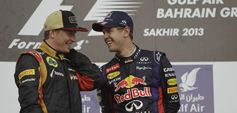

DEBATE EN REDBULL

Mark Webber, el piloto al que le tergiversan sus palabras, como a tantos deportistas... maldita prensa... termina contrato este año en Red Bull. Y, a pesar de que podría renovar, también se apunta desde su propia escudería a la posibilidad de que no siguiera. El propio Dieter Mateschiz fue quien habló de Kimi Raikkonen. El finlandés de Lotus ya fue patrocinado por Red Bull en su aventura de los rallys.
Pero para fichar a Kimi, en la escudería energética tienen que preguntar al jefe. Sí, Sebastian Vettel ya ha respondido, al menos a los compañeros de Sport Bild. Y bueno, pues le parece bien. "No me importa quien sea mi compañero de equipo, si quieres ganar el título tienes que vencerlos a todos. Pero si Raikkonen fuera mi compañero, pues bien. No tenemos ningún problema y somos lo suficientemente maduros como para hacer frente a situaciones difíciles. Me llevo bien con él, no tengo ningún problema", sostiene el tricampeón del mundo.
Mientras su gran amigo en Red Bull, Helmut Marko también opina sobre lo que puede pasar con el compañero del alemán el próximo año: "Ahora mismo tanto Vettel como Webber son dos perros alfa, pero ellos trabajan juntos de forma constructiva, y eso es suficiente. Mientras siga siendo así, no tienen de que preocuparse. Nunca han sido grandes amigos, pero tienen una relación de trabajo que todavía funciona". Es decir apunta a la posibilidad de que siga Webber.

 Formula 1
Formula 1